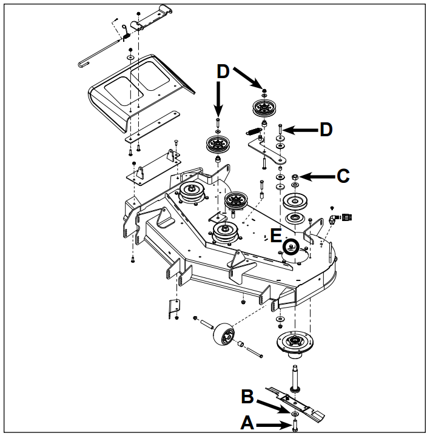
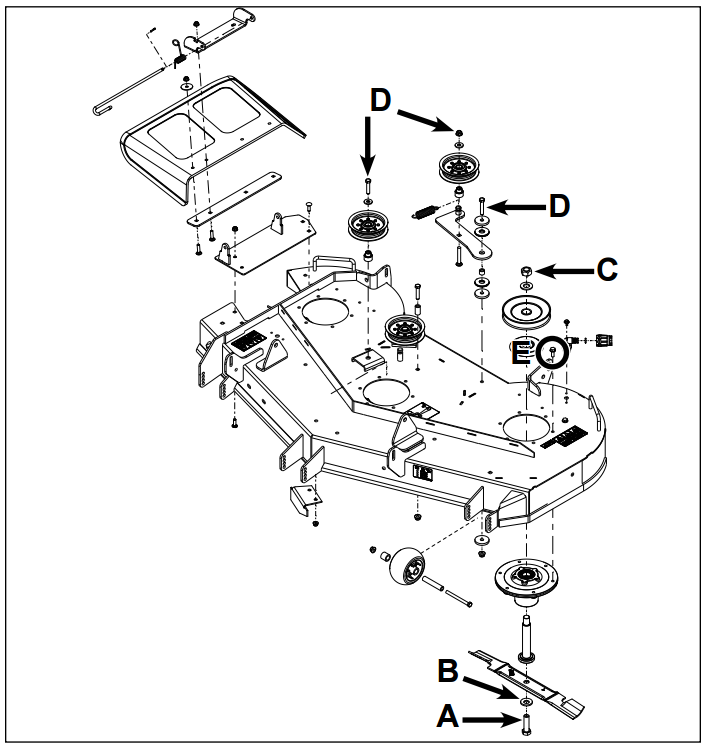
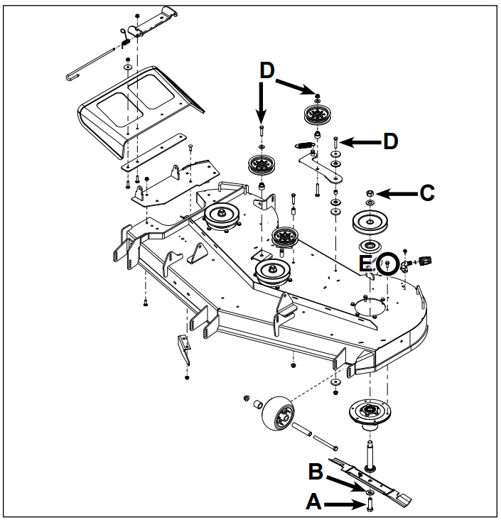
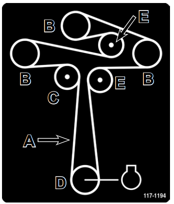
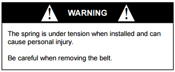
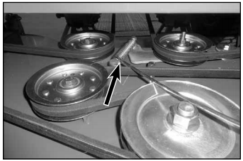
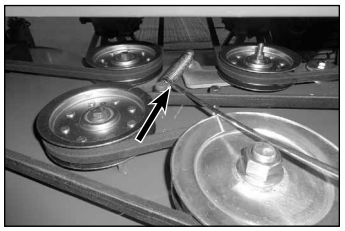
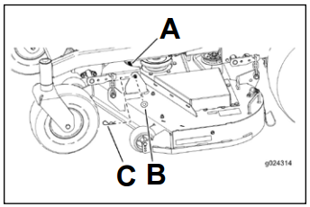
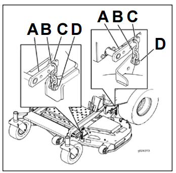

Mower Deck Exploded Views
48 Inch Deck

- A. Blade bolt - 105 ft-lbs. (143 Nm)
- B. Washer - concave side towards blade
- C. Pulley Nut - 105 Ft-lbs. (143 Nm)
- D. 30 ft-lbs. (40 Nm)
- E. Spindle housing-to-deck bolts - 14 ft-lbs. (19 Nm)
54 Inch Deck

- A. Blade bolt - 105 ft-lbs. (143 Nm)
- B. Washer - concave side towards blade
- C. Pulley Nut - 105 ft-lbs. (143 Nm)
- D. 30 ft-lbs. (40 Nm)
- E. Spindle housing-to-deck bolts - 14 ft-lbs. (19 Nm)
60 Inch Deck

- A. Blade bolt - 105 ft-lbs. (143 Nm)
- B. Washer - concave side towards blade
- C. Pulley Nut - 105 ft-lbs. (143 Nm)
- D. 30 ft-lbs. (40 Nm)
- E. Spindle housing-to-deck bolts - 14 ft-lbs. (19 Nm)
PTO Belt Replacement and Belt Routing
48, 54 & 60 Inch Deck

- A. PTO belt
- B. Spindle pulley
- C. PTO belt tensioner
- D. PTO clutch pulley
- E. Stationary idler pulley
Inspecting the Belts
Service Interval: Every 25 hours - Check the belts for wear.
Check the belts for cracks, frayed edges, burn marks or any other damage. Replace damaged belts.
PTO Belt Replacement - 48, 54 & 60 Inch Deck
Squaling when the belt is rotating, blades slipping when cutting grass, frayed belt edges,, burn marks and cracks are signs of a worn mower belt. Replace the mower belt. Replace the mower belt if any of these conditions are evident.
- Disengage the blade control switch (PTO), move the motion control levers to the neutral locked position and set the parking brake.
- Stop the engine, remove the key, and wait for all moving parts to stop before leaving the operating position.
- Lower the mower to the 3 inch (76 mm) height-of-cut position.
- Remove the (2) belt covers from the deck.

- Lift the floor pan upward into service position to gain access to the belt tensioner / idler pulley. Using a spring tool, (Toro part no. 92-5771), remove the PTO belt tensioner / idler spring from the deck post to remove tension on the idler pulley (Fog. 090).

- Lower the mower to the lowest height-of-cut.
- Remove the belt from the deck and PTO pulleys. Remove the existing belt from the unit.
- Properly route new belt around the deck pulleys and PTO pulley (Fig. 091).
- A. PTO belt
- B. Spindle pulley
- C. PTO belt tensioner
- D. PTO clutch pulley
- E. Stationary idler pulley
- Using a spring tool, (Toro part no. 92-5771), install the tensioner / idler spring over the deck post to place tension on the idler pilley mower belt (Fig. 092).

- Ensure that the belt is properly seated in all pulleys.
- Install the belt covers.
- Verify proper PTO operation.
Mower Deck Placement
Mower Deck Removal - 48, 54 & 60 Inch Deck
- Park the machine ona level surface and disengage PTO switch.
- Move the motion control levers outward to the neutral position and engage parking brake.
- Stop the engine, remove the key, and wait for all moving parts to stop before leaving the operating position.
- Lower the mower to the 3 inch (76mm) height-of-cut position.
- Remove PTO belt as shown in this chapter.
- Lower the mower to the lowest height-of-cut.
- Remove the (2) cotterpins and (2) washers securing the front pivot pin to the deck. Remove the pivot pin from the deck (Fig. 093).

- A. Link pin
- B. Washer
- C. Hair pin cotter
- Safety lift upward on the mower deck to relieve tension from the chain links.
- Carefully manuever the top chain link up and off the lift rod hooks. Repeat for the three remaining chain lift points (Fig. 094).

- A. Deck lift arm
- B. Chain
- C. Hook
- D. Adjustment bolt
- Raise the height-of-cut to the transport position.
- Slide the mower out from underneath the machine.